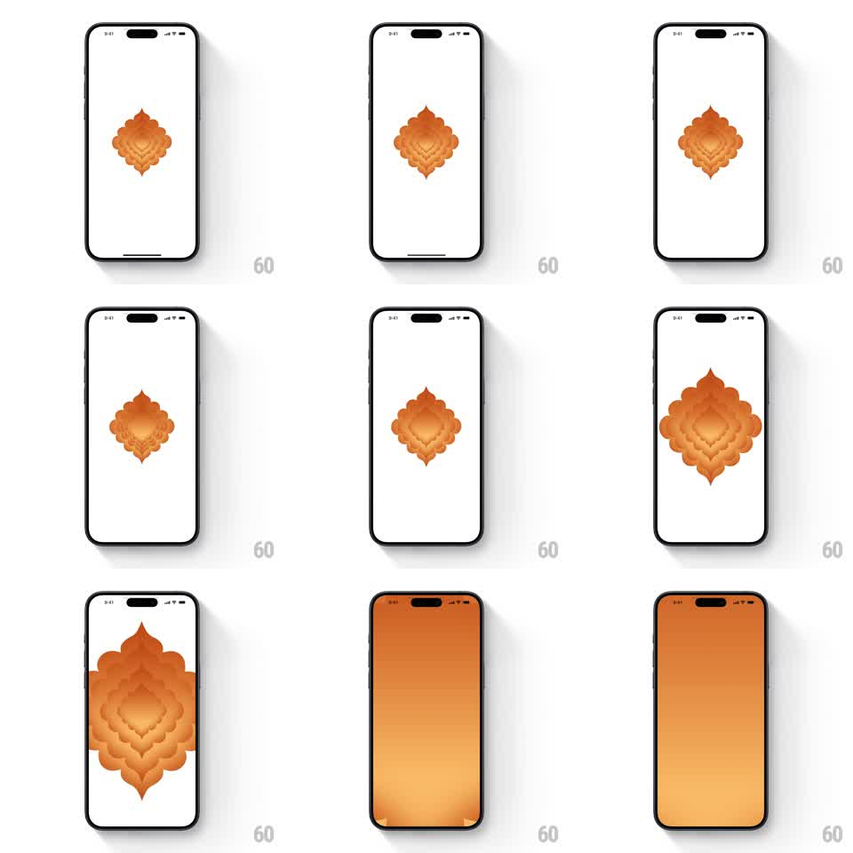

Media
Frame-by-frame

Rebuild this animation 1:1: Sarvam's Indus splash - a layered orange ornamental mark breathes at the center of a white screen, then accelerates outward, its petals expanding until the whole screen floods orange.

Rebuild this animation 1:1: Sarvam's Indus splash - a layered orange ornamental mark breathes at the center of a white screen, then accelerates outward, its petals expanding until the whole screen floods orange. ## Integration Integration: stack-agnostic spec - springs given as stiffness/damping, timed motions as duration + curve; map every value to your framework and animation library of choice. ## Scene Indus splash, white: a single centered ornamental mark - concentric layers of orange petals/scales forming a diamond-shaped motif, darker orange toward the center, lighter at the edges. ## Motion spec Pattern: breathing logo that zooms into a fullscreen color wash. - The mark assembles quietly: layers fade in from the center outward (5-6 layers, 80ms apart, 200ms each). - It breathes twice: scale 1 -> 1.06 -> 1, ~900ms per breath, ease-in-out, with the outer layers lagging the center by 60ms so the motion ripples outward. - The launch: scale accelerates 1 -> 8 over 700ms (ease-in) - the petals grow past the screen edges, center locked. - As the outermost layer crosses the edges, the whole screen becomes the orange gradient; the mark's center dissolves into the wash (opacity of fine detail -> 0 during the last 200ms). - The orange screen then crossfades to the app's first screen (300ms). ## Calibration - The zoom is centered on the mark's core - it must feel like falling into the motif, not the image growing. - Keep the breathing slow and the launch fast - the contrast is the drama. ## Reduced motion The mark fades in (300ms), holds, then crossfades to the orange wash (400ms). ## Don't miss - Layer lag during breathing - the ripple from center to edge is what makes it feel alive. - The final wash must match the mark's orange exactly so the transition is seamless.